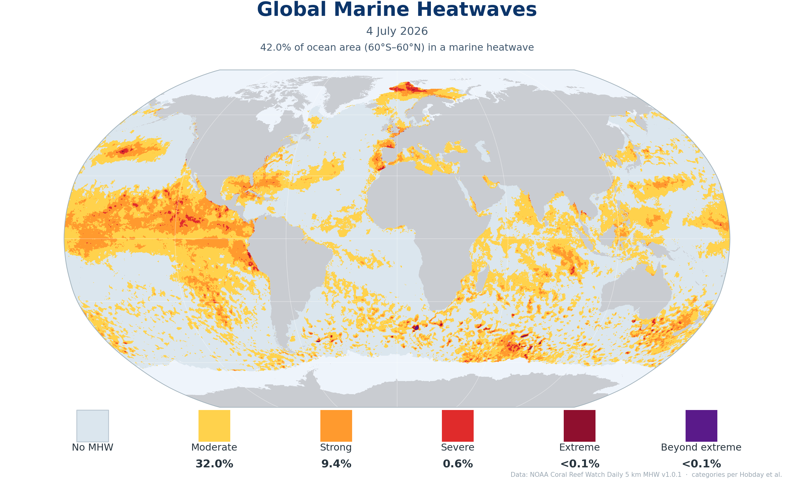

Daily global marine-heatwave conditions, updated automatically each day. Colours show heatwave severity (Moderate → Beyond extreme) following the Hobday et al. classification; the inset gives the share of ocean area between 60°S and 60°N in each category. Data from the NOAA Coral Reef Watch Daily 5 km Marine Heatwave product. Values within ~2 weeks of the date shown are preliminary and may be revised.